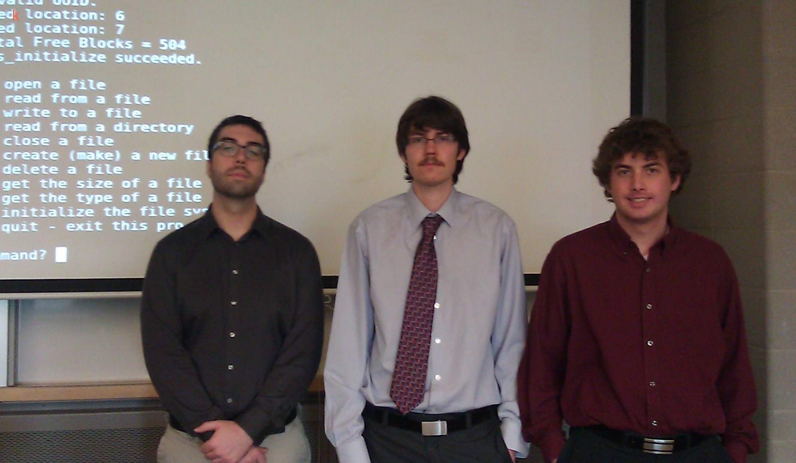

Operating Systems (ENGR 3950U / CSCI 3020U)
Lab Schedule (Fall 2012)
|
|
ENGR 3950U (Lab + Tutorial) |
CSCI 3020U (G1) (Lab) |
CSCI 2020U (G2) (Lab) |
|---|---|---|---|
| Sep 10 Lab Cancelled |
Sep 10 Lab Cancelled |
||
Sep 17 |
Sep 17 (Lab 1) Introduction, installation, and experimentation: |
||
Sep 24 |
Sep 24 (Lab 1) Introduction, installation, and experimentation: 1. Linux Introduction (PDF) 2. Virtual Box (PDF) 3. Eclipse IDE (PDF) |
Sep 24 (Lab 1) Introduction, installation, and experimentation: 1. Linux Introduction (PDF) 2. Virtual Box (PDF) 3. Eclipse IDE (PDF) |
|
Oct 1 |
Oct 1 (Lab 2) | Oct 1 (Lab 2) |
Oct 1 (Lab 2) |
| Oct 8 | Thanksgiving Holiday |
Thanksgiving Holiday |
|
| Oct 15 |
1. Solution to Project 1 |
Oct 15 |
|
| Oct 22 | Oct 22 1. Detail description of project 2. Explanation of the provided files: sfstest.c, blockio.c, makefile. 3. C programming exercises 4. Discussion on solution of Assignment 1 (Tutorial) |
Oct 22 1. Detail description of project 2. Explanation of the provided files: sfstest.c, blockio.c, makefile. 3. C programming exercises |
|
| Oct 29 | Sample Data Structure Design (This is not exactly Unix) | Sample Data Structure Design (This is not exactly Unix) | Oct 29 1. Detail description of project 2. Sample Data Structure Design (This is not exactly Unix). 3. Guides on data structure implementation. 4. Explanation of the provided files: sfstest.c, blockio.c, makefile. 5. C programming exercises (If time allows). |
| Nov 5 | Nov 5 (Sample Design) 1. Data & Function declarations 2. Call Graphs |
Nov 5 (Sample Design) 1. Data & Function declarations 2. Call Graphs |
|
| Nov 12 | Nov 12 (Sample Design) 1. Data & Function declarations 2. Call Graphs 3. Discussions on functions |
||
| Nov 19 | Nov 19 1. Assistance to project groups using previous documents: a) Sample data structure design; b) Data & Function declaration; b) Call graphs; and c) C language. 2. Comparing group's submitted design document with their project implementation. |
Nov 19 1. Assistance to project groups using previous documents: a) Sample data structure design; b) Data & Function declaration; b) Call graphs; and c) C language. 2. Comparing group's submitted design document with their project implementation. |
|
| Nov 26 | Nov 26 (Project Demo & Evaluation) Instructions & Marking Scheme 1. Project demonstration 2. Running test cases 3. Questions on operations 4. Code walkthrough |
||
| Dec 3 | Dec 3 (Project Demo & Evaluation) Instructions & Marking Scheme 1. Project demonstration 2. Running test cases 3. Questions on operations 4. Code walkthrough |
Dec 3 (Project Demo & Evaluation) Instructions & Marking Scheme 1. Project demonstration 2. Running test cases 3. Questions on operations 4. Code walkthrough |
|
| ****
Best Project **** |

Your project is to implement a simple file system using C language. You can use any execution platform and compiler to compile and run your program. You will be given code to simulate access to a block-oriented storage device. Your file system will be based on a simulated block-oriented storage device. The interface and functionality of the file system are similar to a simple Unix file system. Your grade will be based on the design of the data structure, correctness of execution and on the quality and style of your code and documentation. More description about the project will be posted here.
Project Tutorials during Labs